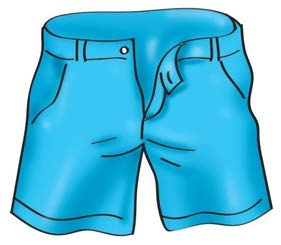
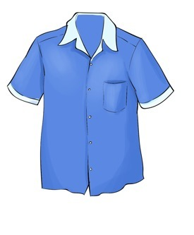
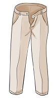
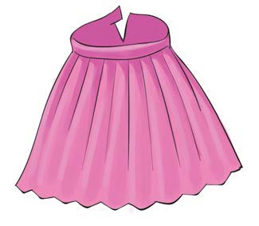

Chapter Two - Taking care of clothes
Chapter Two
Taking care of clothes
I know my clothes.

I wear these
clothes to
look smart.


1
2


3
4
I know my clothes.
I wear these
clothes to
look smart.


1
2


3
4